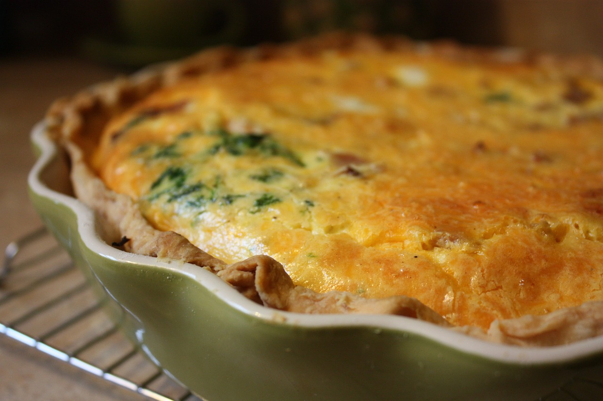

As receitas sem lactose representam uma celebração de sabores sem comprometer a saúde e o bem-estar daqueles que enfrentam a intolerância à lactose. Ao explorar alternativas como leites vegetais, queijos sem lactose e iogurtes à base de plantas, essas receitas não apenas oferecem soluções práticas, mas também expandem o horizonte gastronômico para além dos limites tradicionais. Os livros de receitas dedicados a esse público não apenas fornecem uma variedade de opções deliciosas, desde sobremesas decadentes até pratos salgados, mas também destacam a versatilidade dos ingredientes livres de lactose. Ao optar por receitas sem lactose, os cozinheiros têm a oportunidade de criar refeições nutritivas e saborosas, redefinindo a ideia de restrição alimentar e promovendo uma culinária inclusiva que satisfaz o paladar sem comprometer a saúde digestiva.

Invista e transforme a maneira como você aprecia cada mordida!